Vignette
Environment Agency / APEM Ltd
Vignette.RmdInstallation
if (!require(pacman)) {
install.packages("pacman")
}
pacman::p_load(insight, RCurl, writexl, htmlTable, devtools, roxygen2, ggnewscale,
visreg, formatR, reshape, glmmTMB, remotes, merTools, imputeTS, sf, geojsonio,
leaflet, plyr, rnrfa, scatterPlotMatrix)
# Conditionally install hetoolkit from github install.packages('remotes')
library(remotes)
# Conditionally install hetoolkit from github
if ("hetoolkit" %in% installed.packages() == FALSE) {
remotes::install_github("APEM-LTD/hetoolkit")
}
library(hetoolkit)Introduction
The hetoolkit package comprises a collection of 21
functions for assembling, processing, visualising and modelling
hydro-ecological data. These are:
-
import_nrfafor importing flow data from the National River Flow Archive (NRFA); -
import_hdefor importing flow data from the Environment Agency (EA) Hydrology Data Explorer (HDE); -
import_flowfilesfor importing flow data from local files; -
import_flowfor importing flow data from a mix of the above sources; -
impute_flowfor infilling missing records in daily flow time series for one or more sites (gauging stations) using either an interpolation or an equipercentile method. -
import_invfor importing macroinvertebrate sampling data from the EA Ecology and Fish Data Explorer; -
import_envfor importing environmental base data from the EA Ecology and Fish Data Explorer; -
import_rhsfor importing River Habitat Survey (RHS) data from the EA’s Open Data portal; -
import_wqfor importing water quality data from the EA Water Quality Explorer; -
predict_indicesfor calculating expected scores for macroinvertebrate indices using the RICT model (FBA 2020); -
calc_flowstatsandcalc_rfrstatsfor calculating summary statistics describing historical flow conditions; -
join_hefor joining the above datasets; -
plot_heatmapfor visualising and summarising gaps in time series data; -
plot_hevandshiny_hevfor producing time series plots of biology and flow data; -
plot_sitepcafor summarising environmental characteristics of biological sampling sites; -
plot_rngflowsfor Visualising the range of flow conditions experienced historically at a site; -
model_cvandmodel_logocvfor performing cross-validation on linear mixed-effects models and hierarchical generalized additive models; -
diag_lmerfor generating a variety of diagnostic plots for a mixed-effects regression (lmer) model; and -
plot_predictionsfor visualising the time series predictions from a hydro-ecological model.
This vignette illustrates a typical workflow using a selection of 20 macroinvertebrate sampling sites from the Environment Agency’s National Drought Monitoring Network (NDMN).
Although the package has been developed with macroinvertebrate data in mind, the functions can be used with any kind of biological sampling data.
Meta-data file
To link together disparate datasets requires a look-up table of site ids. In this example, we load a table with four columns:
- biol_site_id = id of biology (in this case macroinvertebrate) sampling site.
- flow_site_id = id of paired flow gauging station.
- flow_input = vector specifying where to source the flow data for station (either National River Flow Archive “NRFA”, Hydrology Data Explorer “HDE”, or local files “FLOWFILES”).
- rhs_survey_id = id of paired River Habitat Survey (RHS) (survey id, not not site id, in case multiple surveys have been undertaken at a site).
# load master file
data("master_file")
# make all columns character vectors
master_file$biol_site_id <- as.character(master_file$biol_site_id)
master_file$rhs_survey_id <- as.character(master_file$rhs_survey_id)
# filter master file for selected sites of interest
master_data <- master_file %>%
filter(biol_site_id %in% c("34310", "34343", "34352", "55287", "55395", "55417",
"55673", "55824", "55897", "56065", "56226", "54637", "54769", "54801", "80998",
"54827", "77216"))
# view data
master_data## # A tibble: 17 × 4
## biol_site_id flow_site_id flow_input rhs_survey_id
## <chr> <chr> <chr> <chr>
## 1 34310 2859TH HDE 39880
## 2 34343 4790TH HDE 39881
## 3 34352 5420TH HDE 39797
## 4 77216 F3105 HDE 39621
## 5 55287 029003 HDE 38660
## 6 55395 029001 HDE 38669
## 7 55417 030017 HDE 38670
## 8 55673 032806 HDE 39205
## 9 55824 031031 HDE 39707
## 10 55897 033044 HDE 39798
## 11 56065 033051 HDE 39310
## 12 56226 033022 HDE 39839
## 13 54637 037005 HDE 39560
## 14 54769 035004 HDE 38952
## 15 54801 034003 HDE 39612
## 16 80998 034206 HDE 39891
## 17 54827 035002 HDE 39574
# get site lists, for use with functions
biolsites <- master_data$biol_site_id
flowsites <- master_data$flow_site_id
flowinputs <- master_data$flow_input
rhssurveys <- master_data$rhs_survey_idStandardised Column Names
A number of standardised column names are used throughout the
hetoolkit package, and throughout this vignette and its
associated datasets. These include:
- biol_site_id = macroinvertebrate sampling site ids.
- flow_site_id = flow gauging station ids.
- rhs_survey_id = River Habitat Survey (RHS) ids (survey id, not not site id, in case multiple surveys have been undertaken at a site).
-
flow = flow data, as downloaded using the
import_flowfunction
Prepare biology, ENV and RHS data
Import biology data
The import_inv function imports macroinvertebrate
sampling data from the Environment Agency’s Ecology and Fish Data
Explorer. The data can either be downloaded from https://environment.data.gov.uk/ecology-fish/downloads/INV_OPEN_DATA.zip
or read in from a local .csv or .rds file. The data can be optionally
filtered by site ID and sample date.
Below, we use our list biolsites to filter the data from
EDE.
# Import biology data from EDE
biol_data <- import_inv(source = "parquet", sites = biolsites, start_date = "2010-01-01",
end_date = "2020-12-31")
# view biol_data
biol_data## # A tibble: 450 × 58
## biol_site_id SAMPLE_ID SAMPLE_VERSION REPLICATE_CODE SAMPLE_DATE SAMPLE_TYPE
## <chr> <chr> <int> <chr> <date> <fct>
## 1 56065 605567 1 NA 2010-03-16 SP
## 2 56065 611126 1 NA 2010-07-28 SP
## 3 56065 614704 1 NA 2010-10-12 SP
## 4 56065 621146 1 NA 2011-03-29 SP
## 5 56065 625474 1 NA 2011-06-14 SP
## 6 56065 627625 1 NA 2011-08-06 SP
## 7 56065 630894 1 NA 2011-10-12 SP
## 8 56065 633498 1 NA 2011-12-09 SP
## 9 56065 634677 1 NA 2012-02-08 SP
## 10 56065 635806 1 NA 2012-04-12 SP
## # ℹ 440 more rows
## # ℹ 52 more variables: SAMPLE_TYPE_DESCRIPTION <fct>, SAMPLE_METHOD <fct>,
## # SAMPLE_METHOD_DESCRIPTION <fct>, SAMPLE_REASON <fct>, ANALYSIS_ID <int>,
## # DATE_OF_ANALYSIS <date>, ANALYSIS_TYPE <fct>,
## # ANALYSIS_TYPE_DESCRIPTION <fct>, ANALYSIS_METHOD <fct>,
## # ANALYSIS_METHOD_DESCRIPTION <fct>, BMWP_N_TAXA <int>, BMWP_TOTAL <int>,
## # BMWP_ASPT <dbl>, CCI_N_TAXA <int>, CCI_CS_TOTAL <int>, CCI_ASPT <dbl>, …Optional: Join additional biology data
If the user has additional biology data in a separate Excel file, it is possible to append this to the EDE download. The additional data must have the same column names as the EDE download file.
# bind 2 biology data sets - one from EDE and one local file
# drop any unwanted variables/columns from the EDE download file
drops_bio <- c("SAMPLE_VERSION", "REPLICATE_CODE", "SAMPLE_TYPE", "SAMPLE_METHOD",
"ANALYSIS_TYPE", "ANALYSIS_METHOD", "IS_THIRD_PARTY_DATA", "WATERBODY_TYPE")
# drop unwanted variables
biol_data2 <- biol_data[, !(names(biol_data) %in% drops_bio)]
# read in additional biology data in csv format
biol_data_excel <- read.csv("Data/biol_data_join.csv")
# format columns
biol_data_excel <- biol_data_excel %>%
dplyr::mutate(biol_site_id = as.character(biol_site_id))
# convert to tibble format
biol_data_excel <- as_tibble(biol_data_excel)
# bind datasets
biol_data_final <- rbind(biol_data2, biol_data_excel)Import environmental data
The import_env function allows the user to download
environmental base data from the Environment Agency’s Ecology and Fish
Data Explorer.
The function either:
- downloads environmental data data from https://environment.data.gov.uk/ecology-fish/downloads/INV_OPEN_DATA.zip
- or imports it from a local .csv or .rds file
Data can be optionally filtered by site ID.
When saving, the name of rds file is hard-wired to: INV_OPEN_DATA_SITES_ALL.rds.
If saving prior to filtering, the name of the filtered rds file is hard-wired to: INV_OPEN_DATA_SITE_F.rds.
Below, we use our list biolsites to filter the data from
EDE.
# Import biology data from EDE
env_data <- import_env(sites = biolsites)
# view env_data
env_data## # A tibble: 17 × 34
## AGENCY_AREA REPORTING_AREA CATCHMENT WATERBODY_TYPE WATERBODY_TYPE_DESCR…¹
## <chr> <chr> <chr> <chr> <chr>
## 1 ANGLIAN - NOR… LINCOLNSHIRE … EAST LIN… WBRV RIVER: Natural/semi-n…
## 2 ANGLIAN - CEN… EAST ANGLIA -… IVEL WBRV RIVER: Natural/semi-n…
## 3 ANGLIAN - EAS… EAST ANGLIA -… WAVENEY … WBRV RIVER: Natural/semi-n…
## 4 ANGLIAN - CEN… EAST ANGLIA -… CAM (2) WBRV RIVER: Natural/semi-n…
## 5 ANGLIAN - EAS… EAST ANGLIA -… BURE WBRV RIVER: Natural/semi-n…
## 6 THAMES - NORT… HERTFORDSHIRE… RODING WBRV RIVER: Natural/semi-n…
## 7 ANGLIAN - CEN… EAST ANGLIA -… LT OUSE,… WBRV RIVER: Natural/semi-n…
## 8 NORTH EAST - … YORKSHIRE HULL WBRV RIVER: Natural/semi-n…
## 9 ANGLIAN - EAS… EAST ANGLIA -… DEBEN WBRV RIVER: Natural/semi-n…
## 10 ANGLIAN - NOR… LINCOLNSHIRE … UPPER NE… WBRV RIVER: Natural/semi-n…
## 11 ANGLIAN - EAS… EAST ANGLIA -… COLNE (A… WBRV RIVER: Natural/semi-n…
## 12 ANGLIAN - NOR… LINCOLNSHIRE … EAST LIN… WBRV RIVER: Natural/semi-n…
## 13 ANGLIAN - NOR… LINCOLNSHIRE … WELLAND WBRV RIVER: Natural/semi-n…
## 14 THAMES - NORT… HERTFORDSHIRE… MIMRAM WBRV RIVER: Natural/semi-n…
## 15 THAMES - NORT… HERTFORDSHIRE… COLNE (T… WBRV RIVER: Natural/semi-n…
## 16 ANGLIAN - NOR… LINCOLNSHIRE … CENTRAL … WBRV RIVER: Natural/semi-n…
## 17 ANGLIAN - EAS… EAST ANGLIA -… ALDE AND… WBRV RIVER: Natural/semi-n…
## # ℹ abbreviated name: ¹WATERBODY_TYPE_DESCRIPTION
## # ℹ 29 more variables: WATER_BODY <chr>, biol_site_id <chr>,
## # SITE_VERSION <int>, NGR_PREFIX <chr>, EASTING <chr>, NORTHING <chr>,
## # NGR_10_FIG <chr>, FULL_EASTING <int>, FULL_NORTHING <int>,
## # WFD_WATERBODY_ID <chr>, ALTITUDE <dbl>, SLOPE <dbl>,
## # DIST_FROM_SOURCE <dbl>, DISCHARGE <dbl>, WIDTH <dbl>, DEPTH <dbl>,
## # BOULDERS_COBBLES <dbl>, PEBBLES_GRAVEL <dbl>, SAND <dbl>, …Optional: Map biology sites
Get data
We use the environmental base data that we have downloaded from the
Ecology and Fish Data Explorer using import_env, this gives
us their NGRs. We translate the NGRs to full latitude / longitude
(WGS84) and match this back to the env_data so we have information to
include in the plot.
## Convert national grid ref (NGR) to full lat / long from env_data (from import_env function)
## WGS84 is lat/long.
temp.eastnorths <- osg_parse(env_data$NGR_10_FIG, coord_system = "WGS84") %>% as_tibble()
## match to back to env data to give details on map
env_data_map <- cbind(env_data, temp.eastnorths) %>%
dplyr::select(AGENCY_AREA, WATER_BODY, CATCHMENT, WATERBODY_TYPE, biol_site_id, lat, lon) %>%
dplyr::mutate(label = paste0("<b>", as.character(biol_site_id), "</b><br/>", AGENCY_AREA, "<br/>", CATCHMENT))Create the map
Finally we use leaflet to plot the and points indicating the sample sites. The points are labelled with the biology sample site ID, EA area code and the catchment.
## Create map
leaflet() %>%
leaflet::addTiles() %>%
leaflet::addMarkers(lng = env_data_map$lon, lat = env_data_map$lat, popup = env_data_map$label,
options = popupOptions(closeButton = FALSE))Optional: Join additional environmental data
Any additional environmental data in a separate Excel file can be appended to the EDE download. The additional data must have the same column names as the EDE download file.
# # bind 2 env data sets - one from EDE and one local file # drop any unwanted
# variables/columns from the download file drops_env <- c('AGENCY_AREA',
# 'REPORTING_AREA', 'CATCHMENT', 'WATERBODY_TYPE',
# 'WATERBODY_TYPE_DESCRIPTION', 'SITE_VERSION', 'NGR_10_FIG', 'FULL_EASTING',
# 'FULL_NORTHING', 'BASE_DATA_DATE', 'MIN_SAMPLE_DATE', 'MAX_SAMPLE_DATE',
# 'COUNT_OF_SAMPLES', 'ECN_SITE', 'INV', 'ECN_SITE_INV') # drop unwanted
# variables env_data <- env_data[ , !(names(env_data) %in% drops_env)] #
# read-in environmental data in excel format env_data_excel <-
# read_excel('data/Env_Additonal_Sites.xlsx') # format columns env_data_excel
# <- env_data_excel %>% dplyr::mutate( biol_site_id =
# as.character(biol_site_id), WATER_BODY = as.character(WATER_BODY), NGR_PREFIX
# = as.character(NGR_PREFIX), EASTING = as.character(EASTING), NORTHING =
# as.character(NORTHING), WFD_WATERBODY_ID = as.character(WFD_WATERBODY_ID)) #
# convert to tibble format env_data_excel <- as_tibble(env_data_excel) # join
# datasets env_data <- rbind(env_data, env_data_excel)Import RHS data
The import_rhs function allows the user to download
River Habitat Survey (RHS) data from Open Data.
The function either:
- downloads RHS data from Open Data, https://environment.data.gov.uk/portalstg/sharing/rest/content/items/b82d3ef3750d49f6917fff02b9341d68/data
- or imports it from a local xlsx or rds file.
Data can be optionally filtered by survey ID.
Downloaded raw data files (in .zip format) will be automatically removed from the working directory following completed execution of the function.
Below, we use our list rhssurveys to filter the
downloaded data.
To enable the RHS data to be joined to the biology and flow data at a
later stage, it is necessary to rename the Survey ID column
to rhs_survey_id.
# import RHS data from Open Data
rhs_data <- import_rhs(surveys = rhssurveys)
# rename Survey.ID as rhs_survey_id
rhs_data <- rhs_data %>%
dplyr::rename(rhs_survey_id = Survey.ID)If required, unwanted variables can be dropped from the dataset.
# select Columns to keep
rhs_keep <- c("rhs_survey_id", "Hms.Poaching.Sub.Score", "Hms.Rsctned.Bnk.Bed.Sub.Score",
"HMS.Score")
# select columns of interest
rhs_data <- rhs_data[, (names(rhs_data) %in% rhs_keep)]
# view rhs_data
rhs_data## # A tibble: 17 × 4
## rhs_survey_id HMS.Score Hms.Poaching.Sub.Score Hms.Rsctned.Bnk.Bed.Sub.Score
## <chr> <dbl> <dbl> <dbl>
## 1 38660 1305 0 80
## 2 38669 3175 0 2000
## 3 38670 525 10 0
## 4 38952 3140 0 2280
## 5 39205 3420 0 2520
## 6 39310 3810 0 2200
## 7 39560 240 0 0
## 8 39574 780 0 760
## 9 39612 2600 50 2000
## 10 39621 250 0 0
## 11 39707 3040 0 2720
## 12 39797 3120 0 2080
## 13 39798 3570 0 2520
## 14 39839 2855 0 2440
## 15 39880 1740 0 240
## 16 39881 1055 60 0
## 17 39891 3170 10 2760Predict expected indices
The predict_indices function mirrors the functionality
of the RICT model available on the MS Azure platform (https://gallery.azure.ai/Experiment/RICT-package-2).
Specifically, it uses the environmental data downloaded from EDE to
generate expected scores under minimally impacted reference conditions
for 80 indices, plus probabilities for RIVPACS end-groups. No
classification is undertaken.
Data validation, transformation (conversion) and predictions are done
within predict_indices using functionality predefined in
the AquaMetrics RICT package (https://github.com/aquaMetrics/rict); specifically, the
‘rict_predict’ function from the aquaMetrics RICT package is
applied.
The predict_indices function can accept environmental
data formatted in either of two formats, specified using the
‘file_format’ argument: * “EDE” - environmental data is formatted as
downloaded from the EA’s Ecology Data Explorer * “RICT” - environmental
data is in the RICT template format.
To run, the following columns containing substrate composition data must not contain NAs, and must total to 100 for every site:
- BOULDERS_COBBLES
- PEBBLES_GRAVEL
- SAND
- SILT_CLAY
The code below demonstrates how to summarise whether these columns contain NAs, and how to replace NAs as required. Note, this code will only run successfully if using data in the “EDE” file format.
# check substrate variables for presence of NAs
env_data %>%
dplyr::select(BOULDERS_COBBLES, PEBBLES_GRAVEL, SAND, SILT_CLAY) %>%
summarise_all(~sum(is.na(.)))## # A tibble: 1 × 4
## BOULDERS_COBBLES PEBBLES_GRAVEL SAND SILT_CLAY
## <int> <int> <int> <int>
## 1 0 0 0 0
# replace NAs, if required
env_data$BOULDERS_COBBLES[is.na(env_data$BOULDERS_COBBLES)] <- 0Now that the substrate data is complete, the expected scores can be generated. Here, we opt to calculate all available indices - we can then filter these down at a later stage.
This is an updated version of the predict_indices
function. The first iteration of the function remains available, using
preict_indices_old.
# run predictions
predict_data <- predict_indices(env_data = env_data, file_format = "EDE", all_indices = TRUE)## ROW SITE YEAR FAIL
## 1 17 54769 2025 ---
## 2 3 80998 2025 ---
## WARNING
## 1 You provided LONGITUDE: 1.4717273941385, max value used to train model: 1.3560119.
## 2 You provided LONGITUDE: 1.35613296461629, max value used to train model: 1.3560119.
## REPLACEMENT
## 1 ---
## 2 ---
# view predict_data
predict_data## # A tibble: 51 × 156
## biol_site_id LATITUDE LONGITUDE LOG.ALTITUDE LOG.DISTANCE.FROM.SO…¹ LOG.WIDTH
## <chr> <dbl> <dbl> <dbl> <dbl> <dbl>
## 1 55395 53.5 -0.114 1.18 1.30 0.477
## 2 56226 52.0 -0.267 1.54 1.21 0.568
## 3 80998 52.4 1.36 1.04 1.54 0.954
## 4 56065 52.1 0.191 1.54 1.31 0.740
## 5 54801 52.8 1.25 1.18 1.33 0.799
## 6 34352 51.7 0.258 1.61 1.46 0.602
## 7 55897 52.4 0.877 1.18 1.47 0.954
## 8 77216 54.0 -0.379 0.699 1.17 1.08
## 9 54827 52.2 1.33 1 1.32 0.633
## 10 55673 52.2 -0.934 1.78 1.50 1.10
## # ℹ 41 more rows
## # ℹ abbreviated name: ¹LOG.DISTANCE.FROM.SOURCE
## # ℹ 150 more variables: LOG.DEPTH <dbl>, MEAN.SUBSTRATUM <dbl>,
## # DISCHARGE.CATEGORY <dbl>, ALKALINITY <dbl>, LOG.ALKALINITY <dbl>,
## # LOG.SLOPE <dbl>, MEAN.AIR.TEMP <dbl>, AIR.TEMP.RANGE <dbl>, p1 <dbl>,
## # p2 <dbl>, p3 <dbl>, p4 <dbl>, p5 <dbl>, p6 <dbl>, p7 <dbl>, p8 <dbl>,
## # p9 <dbl>, p10 <dbl>, p11 <dbl>, p12 <dbl>, p13 <dbl>, p14 <dbl>, …
# drop unwanted variables
keeps <- c("biol_site_id", "SEASON", "TL2_WHPT_ASPT_AbW_DistFam", "TL2_WHPT_NTAXA_AbW_DistFam",
"TL3_LIFE_Fam_DistFam", "TL3_PSI_Fam")
predict_data <- predict_data[, (names(predict_data) %in% keeps)]
predict_data <- predict_data %>%
dplyr::rename(Season = SEASON) %>%
dplyr::mutate(Season = case_when(Season == 1 ~ "Spring", Season == 2 ~ "Summer",
Season == 3 ~ "Autumn"))Join Biology Data, Environmental Data, and Expected Indices
Prior to joining the biology data with other datasets, it is advisable to remove any replicate or duplicate samples collected from a site within the same year and season.
# remove replicate samples
biol_data <- biol_data %>%
distinct(biol_site_id, Year, Season, .keep_all = TRUE)The following code demonstrates how to join the expected biology
metric scores from predict_indices to the observed biology
metric scores, using the common fields biol_site_id and
Season.
# join expected and observed biology metric scores, by biol_site_id and Season
biol_all <- dplyr::left_join(biol_data, predict_data, by = c("biol_site_id", "Season"))Next the environmental base data are joined using the common field
biol_site_id.
# join ENV data, by biol_site_id
biol_all <- dplyr::left_join(biol_all, env_data, by = "biol_site_id")Calculate O:E ratios
Now that the observed and expected biology metric scores are joined into a single data frame, O:E (Observed/Expected) ratios can be calculated.
# O:E calcs
biol_all <- biol_all %>%
mutate(WHPT_ASPT_O = WHPT_ASPT, WHPT_ASPT_E = TL2_WHPT_ASPT_AbW_DistFam, WHPT_ASPT_OE = WHPT_ASPT_O/WHPT_ASPT_E,
WHPT_NTAXA_O = WHPT_N_TAXA, WHPT_NTAXA_E = TL2_WHPT_NTAXA_AbW_DistFam, WHPT_NTAXA_OE = WHPT_NTAXA_O/WHPT_NTAXA_E,
LIFE_F_O = LIFE_FAMILY_INDEX, LIFE_F_E = TL3_LIFE_Fam_DistFam, LIFE_F_OE = LIFE_F_O/LIFE_F_E,
PSI_O = PSI_FAMILY_SCORE, PSI_E = TL3_PSI_Fam, PSI_OE = PSI_O/PSI_E, date = SAMPLE_DATE)Prepare flow data
View Flow Data Source
The data frame nrfa.hde provides a joined dataset which illustrates which stations we believe are available on the NRFA, and which stations are available on Hydrology Data Explorer. The dataset was created in early April 2021, and may become out of date over time.
# view nrfa.hde
nrfa.hde## # A tibble: 1,366 × 20
## wiski.id open Flow_Site_Name on.nrfa on.hde id_N name_N catchment.area_N
## <chr> <lgl> <chr> <lgl> <lgl> <dbl> <chr> <dbl>
## 1 021031 FALSE Till at Etal TRUE FALSE 21031 Till … 648
## 2 021032 FALSE Glen at Kirknewt… TRUE FALSE 21032 Glen … 199.
## 3 021038 TRUE Till at Heaton M… TRUE FALSE 21035 Till … 656.
## 4 022001 TRUE Coquet at Morwick TRUE TRUE 22001 Coque… 570.
## 5 022002 FALSE Coquet at Bygate TRUE FALSE 22002 Coque… 59.5
## 6 022003 TRUE Usway Burn at Sh… TRUE TRUE 22003 Usway… 21.4
## 7 022004 FALSE Aln at Hawkhill TRUE FALSE 22004 Aln a… 205
## 8 022006 TRUE Blyth at Hartfor… TRUE TRUE 22006 Blyth… 269.
## 9 022007 TRUE Wansbeck at Mitf… TRUE TRUE 22007 Wansb… 287.
## 10 NA FALSE Alwin at Clennell TRUE FALSE 22008 Alwin… 27.7
## # ℹ 1,356 more rows
## # ℹ 12 more variables: opened_N <chr>, closed_N <chr>,
## # measuring.authority.id_N <chr>, measuring.authority.station.id_N <chr>,
## # wiskiID_H <chr>, label_H <chr>, stationReference_H <chr>,
## # riverName_H <chr>, easting_H <dbl>, northing_H <dbl>, col_H <chr>,
## # value_H <chr>Import flow data
import_flow is a high-level function that calls
import_nrfa, import_hde and
import_flowfiles to import data for a user-defined list of
sites.
Below, we use the lists flowsites and
flowinputs to specify sites for import.
flow_data <- import_flow(sites = flowsites, inputs = flowinputs, start_date = "2010-01-01",
end_date = "2019-12-31", dir = "data/wiski", skip_num = 21, col_order = c(1,
2, 3))
# view flow_data
flow_data## # A tibble: 62,084 × 5
## input flow_site_id date flow quality
## <chr> <chr> <date> <dbl> <chr>
## 1 HDE 029001 2010-01-01 0.426 Good
## 2 HDE 029001 2010-01-02 0.418 Good
## 3 HDE 029001 2010-01-03 0.416 Good
## 4 HDE 029001 2010-01-04 0.419 Good
## 5 HDE 029001 2010-01-05 0.426 Good
## 6 HDE 029001 2010-01-06 0.422 Good
## 7 HDE 029001 2010-01-07 0.416 Good
## 8 HDE 029001 2010-01-08 0.406 Good
## 9 HDE 029001 2010-01-09 0.401 Good
## 10 HDE 029001 2010-01-10 0.54 Good
## # ℹ 62,074 more rowsExplore data gaps
The plot_heatmap function is designed to visualise and
summarise gaps in time series data.
It plots time series data for multiple sites as a tiled heatmap, and optionally produces tabular summaries of data completeness by time period and site. Although designed for application with flow time series data, it can be applied to any type of numerical data, with or without a time dimension.
In the following example, plot_heatmap is used to
explore gaps in the time series of mean daily flows, and then to
summarise how complete the data is in each month.
# generate a heatmap of mean daily flows
a <- plot_heatmap(data = flow_data, x = "date", y = "flow_site_id", fill = "flow",
dual = FALSE)
# view heatmap
gridExtra::grid.arrange(a[[1]])
# view table of completeness statistics for each site
a[[3]]## # A tibble: 17 × 7
## y missing total prop_missing number_of_gaps smallest_gap biggest_gap
## <chr> <int> <int> <dbl> <int> <int> <int>
## 1 029001 0 3652 0 NA NA NA
## 2 029003 0 3652 0 NA NA NA
## 3 030017 0 3652 0 NA NA NA
## 4 031031 4 3652 0.00110 2 1 3
## 5 032806 1 3652 0.000274 1 1 1
## 6 033022 0 3652 0 NA NA NA
## 7 033044 0 3652 0 NA NA NA
## 8 033051 0 3652 0 NA NA NA
## 9 034003 0 3652 0 NA NA NA
## 10 034206 0 3652 0 NA NA NA
## 11 035002 0 3652 0 NA NA NA
## 12 035004 0 3652 0 NA NA NA
## 13 037005 0 3652 0 NA NA NA
## 14 2859TH 0 3652 0 NA NA NA
## 15 4790TH 0 3652 0 NA NA NA
## 16 5420TH 11 3652 0.00301 1 11 11
## 17 F3105 62 3652 0.0170 1 62 62
# uses flow_data, as produced using import_flow()
flow_data$month <- lubridate::month(flow_data$date)
flow_data$year <- lubridate::year(flow_data$date)
temp1 <- flow_data %>%
dplyr::group_by(month, year, flow_site_id) %>%
dplyr::summarise(across(.cols = "flow", list(mean = ~mean(flow, na.rm = TRUE),
missing = ~length(which(is.na(flow))), total = ~length(flow), perc_missing = ~(length(which(is.na(flow)))/length(flow)) *
100), .names = "{.fn}"))
temp1$yy_mm <- paste(temp1$year, temp1$month, sep = "_")
# heatmap of monthly mean flows.
a <- plot_heatmap(data = temp1, x = "yy_mm", y = "flow_site_id", fill = "mean", dual = FALSE)
# view heatmap
gridExtra::grid.arrange(a[[1]])
# heatmap of monthly percentage completeness of the daily flow data
a <- plot_heatmap(data = temp1, x = "yy_mm", y = "flow_site_id", fill = "perc_missing")
# view heatmap
gridExtra::grid.arrange(a[[1]])
Impute flow gaps
The impute_flow function is designed to infill missing
records in daily flow time series for one or more sites (gauging
stations) using either an interpolation or an equipercentile method.
Imputation of missing flow data can improve the later estimation of flow
statistics using the calc_flowstats() function and aid the visualisation
of hydro-ecological relationships using the plot_hev() function.
Note, it is advisable to consult a hydrologist when doing any flow imputation, particularly if your data contains extensive/lengthy gaps.
The most straight-forward interpolation can be completed using a ‘linear’ or ‘exponential’ method.
The output dataset is in long format, similar to that produced by
import_flow. The output dataset contains an ‘imputed’
colunm; this is a flag indicating whether each flow value is original
(0) or imputed (1). Additionally, this function plots up observed and
imputed flow values for each site; enabling the user to validate the
imputation.
Flow interpolation using the ‘linear’ method is demonstrated below:
flow_data_imputed <- impute_flow(flow_data, site_col = "flow_site_id", date_col = "date",
flow_col = "flow", method = "linear")If applying the ‘equipercentile’ method, an optional ‘donor’ argument can be specified. The ‘donor’ argument must be specified in data frame format with at least two columns: the first a list of flow sites requiring imputation, and the second a list of paired donor sites. The function assumes that data for all flow sites specified within the ‘donor’ data table, including paired donor sites, are contained within the ‘flow_data’ supplied.
If flow data for paired donor stations are not already included within the ‘flow_data’ dataframe, then it will be necessary to import the donor flow data, and then append these to the existing flow data (which can be done using the bind_rows() function). For brevity here we use an existing site for donor data.
# create 'donor' data frame for site with relatively large data gap (F3105)
donor_mapping <- data.frame(station = c("F3105"), donor_station = c("029001"))
# get a list of donor sites
donorsites <- as.character(unique(donor_mapping$donor_station))
# impute flow data using the equipercentile method
flow_data_imputed <- impute_flow(flow_data, site_col = "flow_site_id", date_col = "date",
flow_col = "flow", method = "equipercentile", donor = donor_mapping)Calculate flow statistics
calc_flowstats takes a time series of measured or
modelled flows and uses a user-defined moving window to calculate a
suite of long-term and time-varying flow statistics flow statistics for
one or more sites (stations).
The function uses the win_start, win_width and win_step arguments to define a moving window, which divides the flow time series into a sequence of time periods. These time periods may be contiguous, non-contiguous or overlapping.
The sequence of time periods continues up to and including the
present date, even when this extends beyond the period covered by the
input flow dataset, as this facilitates the subsequent joining of flow
statistics and ecology data by the join_he function.
It is primarily designed to work with mean daily flows (e.g. as produced by import_flow), but can also be applied to time series data on a longer (e.g. monthly) time step.
Regardless, the data should be regularly spaced and the same time step should be used for all sites.
The function also requires site, date and flow data columns to be
specified in order to run. The default values for these arguments,
“flow_site_id”, “date” and “flow” respectively, match the column headers
from the outputs of the import_flow and
impute_flow functions. The defaults allow the data from
these functions to be passed without editing into
calc_flowstats, however the names can be changed as normal
to match the data supplied.
This is an updated version of the calc_flowstats
function. The first iteration of the function, which employs fixed
6-monthly spring and autumn flow periods, remains available using
calc_flowstats_old.
# uses flow_data, as produced using import_flow() will also accept interpolated
# flow data (flow_data_imputed), as produced using impute_flow()
# set any negative flow readings to NA
flow_data$flow[flow_data$flow <= 0] <- NA
# calculate flow statistics
flow_stats <- calc_flowstats(data = flow_data, site_col = "flow_site_id", date_col = "date",
flow_col = "flow", win_width = "6 months", win_step = "6 months")calc_flowstats returns a list of two data frames. The
first contains a suite of time-varying flow statistics for every 6 month
winter/summer period at every site. See ?calc_flowstats for
definitions of these statistics.
# view time-varying flow statistics
head(flow_stats[[1]])## flow_site_id win_no start_date end_date n_data n_missing n_total
## 1 029001 1 1995-04-01 1995-09-30 0 183 183
## 2 029001 2 1995-10-01 1996-03-31 0 183 183
## 3 029001 3 1996-04-01 1996-09-30 0 183 183
## 4 029001 4 1996-10-01 1997-03-31 0 182 182
## 5 029001 5 1997-04-01 1997-09-30 0 183 183
## 6 029001 6 1997-10-01 1998-03-31 0 182 182
## prop_missing mean sd Q5 Q10 Q20 Q25 Q30 Q50 Q70 Q75 Q80 Q90 Q95 Q99 Q5z Q10z
## 1 1 NA NA NA NA NA NA NA NA NA NA NA NA NA NA NA NA
## 2 1 NA NA NA NA NA NA NA NA NA NA NA NA NA NA NA NA
## 3 1 NA NA NA NA NA NA NA NA NA NA NA NA NA NA NA NA
## 4 1 NA NA NA NA NA NA NA NA NA NA NA NA NA NA NA NA
## 5 1 NA NA NA NA NA NA NA NA NA NA NA NA NA NA NA NA
## 6 1 NA NA NA NA NA NA NA NA NA NA NA NA NA NA NA NA
## Q20z Q25z Q30z Q50z Q70z Q75z Q80z Q90z Q95z Q99z dry_n dry_e dry_start
## 1 NA NA NA NA NA NA NA NA NA NA NA NA NA
## 2 NA NA NA NA NA NA NA NA NA NA NA NA NA
## 3 NA NA NA NA NA NA NA NA NA NA NA NA NA
## 4 NA NA NA NA NA NA NA NA NA NA NA NA NA
## 5 NA NA NA NA NA NA NA NA NA NA NA NA NA
## 6 NA NA NA NA NA NA NA NA NA NA NA NA NA
## dry_end dry_mid low_n low_e low_start low_end low_mid low_magnitude
## 1 NA NA NA NA NA NA NA NA
## 2 NA NA NA NA NA NA NA NA
## 3 NA NA NA NA NA NA NA NA
## 4 NA NA NA NA NA NA NA NA
## 5 NA NA NA NA NA NA NA NA
## 6 NA NA NA NA NA NA NA NA
## low_severity high_n high_e high_start high_end high_mid e_above3xq50
## 1 NA NA NA NA NA NA NA
## 2 NA NA NA NA NA NA NA
## 3 NA NA NA NA NA NA NA
## 4 NA NA NA NA NA NA NA
## 5 NA NA NA NA NA NA NA
## 6 NA NA NA NA NA NA NA
## e_above5xq50 e_above7xq50 volume vol_z min min_z min_doy min_7day min_7day_z
## 1 NA NA NA NA NA NA NA NA NA
## 2 NA NA NA NA NA NA NA NA NA
## 3 NA NA NA NA NA NA NA NA NA
## 4 NA NA NA NA NA NA NA NA NA
## 5 NA NA NA NA NA NA NA NA NA
## 6 NA NA NA NA NA NA NA NA NA
## min_7day_doy min_30day min_30day_z min_30day_doy max max_z max_doy
## 1 NA NA NA NA NA NA NA
## 2 NA NA NA NA NA NA NA
## 3 NA NA NA NA NA NA NA
## 4 NA NA NA NA NA NA NA
## 5 NA NA NA NA NA NA NA
## 6 NA NA NA NA NA NA NAThe second data table contains long-term flow statistics. The data are arranged in long format, with the following columns:
- flow_site_id (a unique site id);
- season (S = summer, W = winter, A = all);
- parameter (base flow index (bfi), flow duration curve percentiles (p1 to p99), and seasonal means and standard deviations for Q5, Q10, Q20, Q25, Q30, Q50, Q70, Q75, Q80, Q90, Q95 and Q99); and
- value (calculated statistic).
# view long-term flow statistics
flow_stats[[2]]## # A tibble: 2,261 × 5
## flow_site_id start_date end_date parameter value
## <chr> <date> <date> <chr> <dbl>
## 1 029001 2010-01-01 2019-12-31 max 1.18
## 2 029003 2010-01-01 2019-12-31 max 1.58
## 3 030017 2010-01-01 2019-12-31 max 1.70
## 4 031031 2010-01-01 2019-12-31 max 15.9
## 5 032806 2010-01-01 2019-12-31 max 7.83
## 6 033022 2010-01-01 2019-12-31 max 11.8
## 7 033044 2010-01-01 2019-12-31 max 5.48
## 8 033051 2010-01-01 2019-12-31 max 3.46
## 9 034003 2010-01-01 2019-12-31 max 3.44
## 10 034206 2010-01-01 2019-12-31 max 12.5
## # ℹ 2,251 more rowsJoin biology and flow data
The join_he function links biology data with
time-varying flow statistics for one or more antecedent (lagged) time
periods (as calculated by the calc_flowstats function) to
create a combined dataset for hydro-ecological modelling.
The function allows to user to select a method for linking biology samples to flow statistics for antecedent time periods: * using method = “A” (default), lag 0 is defined for each biology sample as the most recently finished flow time period; * using method = “B”, lag 0 is defined as the most recently started flow time period. To describe the antecedent flow conditions prior to each biology sample, the time periods are labelled relative to the date of the biology sample, with lag 0 representing either the most recently finished (method = “A”) or most recently started (method = “B”) flow time period. The time period immediately prior to the Lag 0 time period is the Lag 1 period, and the period immediately prior to that is the Lag 2 period, and so on. The function allows the user to select which antecedent (lagged) time periods the biology data is joined to, e.g. lag = c(0,1,2). This method is demonstrated in the schematic below.

The function also includes an option to specify the ‘join_type’: *
“add_flows” (default) produces a dataset of biological metrics (response
variables) and flow statistics (predictor variables) for
hydro-ecological modelling. * “add_biol” produces a time series of flow
statistics with associated biological metrics which can be used to
assess the coverage of historical flow conditions using the
plot_rngflows function.
This is an updated version of the join_he function. The
first iteration of the function remains available, using
join_he_old.
We will join the data for the pairs of biology and flow sites
specified in master_data.
# get output from calc_flowstats
flowstats_1 <- flow_stats[[1]]
# create two-column table mapping biology sites to flow sites
mapping <- master_data[, c("biol_site_id", "flow_site_id")]
# join flow statistics to biology data
join_data <- join_he(biol_data = biol_all, flow_stats = flowstats_1, mapping = mapping,
lags = c(0, 1), method = "A", join_type = "add_flows")
# view join_data
join_data## # A tibble: 414 × 242
## biol_site_id SAMPLE_ID SAMPLE_VERSION REPLICATE_CODE SAMPLE_DATE SAMPLE_TYPE
## <chr> <chr> <int> <chr> <date> <fct>
## 1 56065 605567 1 NA 2010-03-16 SP
## 2 56065 611126 1 NA 2010-07-28 SP
## 3 56065 614704 1 NA 2010-10-12 SP
## 4 56065 621146 1 NA 2011-03-29 SP
## 5 56065 625474 1 NA 2011-06-14 SP
## 6 56065 630894 1 NA 2011-10-12 SP
## 7 56065 633498 1 NA 2011-12-09 SP
## 8 56065 634677 1 NA 2012-02-08 SP
## 9 56065 635806 1 NA 2012-04-12 SP
## 10 56065 638557 1 NA 2012-06-27 SP
## # ℹ 404 more rows
## # ℹ 236 more variables: SAMPLE_TYPE_DESCRIPTION <fct>, SAMPLE_METHOD <fct>,
## # SAMPLE_METHOD_DESCRIPTION <fct>, SAMPLE_REASON <fct>, ANALYSIS_ID <int>,
## # DATE_OF_ANALYSIS <date>, ANALYSIS_TYPE <fct>,
## # ANALYSIS_TYPE_DESCRIPTION <fct>, ANALYSIS_METHOD <fct>,
## # ANALYSIS_METHOD_DESCRIPTION <fct>, BMWP_N_TAXA <int>, BMWP_TOTAL <int>,
## # BMWP_ASPT <dbl>, CCI_N_TAXA <int>, CCI_CS_TOTAL <int>, CCI_ASPT <dbl>, …Join RHS data
If required, the RHS data can also be joined manually to the combined biology and flow dataset.
# create mapping rhs_survey_id <- as.character(rhssurveys) flow_site_id <-
# as.character(flowsites) mapping <- data.frame(flow_site_id, rhs_survey_id)
# create two-column table mapping biology sites to RHS surveys
mapping <- master_data[, c("biol_site_id", "rhs_survey_id")]
# Join RHS data to join_data
all_data <- dplyr::left_join(join_data, mapping, by = "biol_site_id")
all_data <- dplyr::left_join(all_data, rhs_data, by = "rhs_survey_id")Exploratory data anlaysis
Pairwise correlations
Plotting pairwise correlations among alternative biological metrics
can be useful when deciding which metric(s) to analysis. In this
example, the scatterPlotMatrix function from the package of
the same name is used to explore the distribution and correlations of
four commonly used macroinvertebrate metrics.
scatterPlotMatrix(all_data %>% select(LIFE_F_OE, WHPT_ASPT_OE, WHPT_NTAXA_OE, PSI_OE) %>% na.exclude(), distribType = 1, corrPlotType = "Text", width = 600, height = 600)Similarly, a ggpairs plot can also be used to visualise
relationships between response and predictor variables, and to identify
co-linearity among predictor variables. The strength of correlations can
optionally be represented by circle size rather than coefficient.
scatterPlotMatrix(all_data %>% select(LIFE_F_OE, Q95z_lag0, Q10z_lag0) %>% na.exclude(), distribType = 1, width = 600, height = 600)Assess site similarity
Prior to building a hydro-ecological model, it is important identify
any sites that could potentially be outliers because they are
physically, chemically or geographically dissimilar to the others sites
in the dataset. The plot-sitepca function performs a
Principal Components Analysis (PCA) which reduces a set of site-level
environmental variables down to two uncorrelated ‘principal components’
and plots these components as a two-dimensional scatter plot. Sites that
are closer together have more similar environmental characteristics. The
proportion of the total environmental variation explained by each
component is indicated on the axis labels. The environmental gradients
represented by the two axes can be interpreted by reference to the
arrows (eigenvectors), which show the direction and strength of
correlation between the principal components and the individual
environmental variables.
plot_sitepca(data = env_data, vars = c("ALTITUDE", "SLOPE", "WIDTH", "DEPTH", "BOULDERS_COBBLES", "PEBBLES_GRAVEL", "SILT_CLAY"), eigenvectors = TRUE, label_by = "biol_site_id")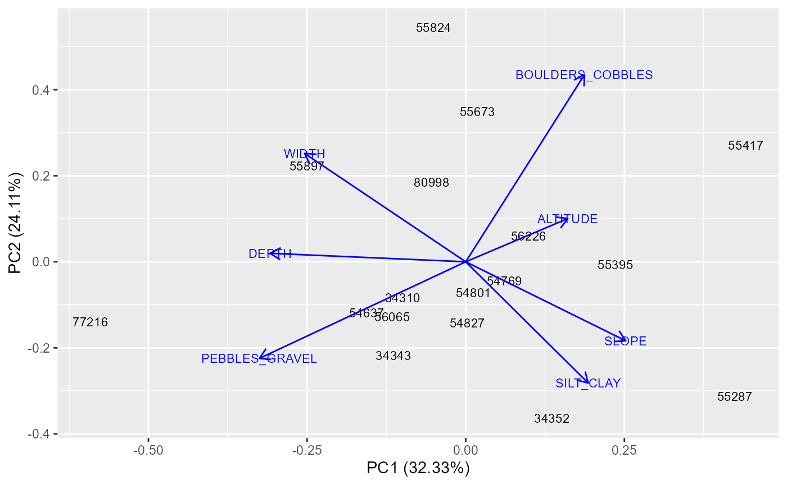
In this example, the first component (x-axis) can be interpreted as a longitudinal gradient from wider, deeper rivers (left) to smaller, steeper streams (right), and the second component (y-axis) can be interpreted a gradient in substrate composition from finer pebbles/gravels (top) to coarser boulder/cobbles (bottom). On the basis of these results, we may wish to consider whether sites such as 77216 and 55824 are suitable for inclusion in the model, or whether they are sufficiently different to warrant being excluded.
Assess coverage of historical flow conditions
A hydro-ecological model has a greater chance of revealing relationships between biology metrics and flow variables if the biology samples span a wide range of flow conditions. Good coverage of historical flow conditions by the biology sample data also means that the calibrated model is likely to be better at predicting biological responses under high and low flow scenarios.
The plot_rngflows function generates a scatterplot for
two flow variables and overlays two convex hulls: one showing the full
range of flow conditions experienced historically, and a second convex
hull showing the range of flow conditions with associated biology
samples. This visualisation helps identify to what extent the available
biology data span the full range of full range of flow conditions
experienced historically.
In the following example, the Q95z and Q10z flow statistics have been selected as measures of low and high flows within each six month period. The first plot shows the data for all 20 sites; the second plot is faceted to show the data separately for each site individually. In this dataset, biology samples are present for almost every six month period, and so provide excellent coverage of historical flow conditions.
all.combinations <- expand.grid(biol_site_id = unique(biol_data$biol_site_id), Year = min(biol_data$Year):max(biol_data$Year), Season = c("Spring", "Autumn"), stringsAsFactors = FALSE)
dim(all.combinations)## [1] 374 3
biol_data1 <- all.combinations %>%
left_join(biol_all)
mapping <- master_data[, c("biol_site_id", "flow_site_id")]
join_data <- join_he(biol_data = biol_data1, flow_stats = flowstats_1, mapping = mapping, lags = c(0, 1), method = "A", join_type = "add_biol")
plot_rngflows(data = join_data, flow_stats = c("Q95z_lag0", "Q10z_lag0"), biol_metric = "LIFE_F_OE", wrap_by = NULL, label = "Year")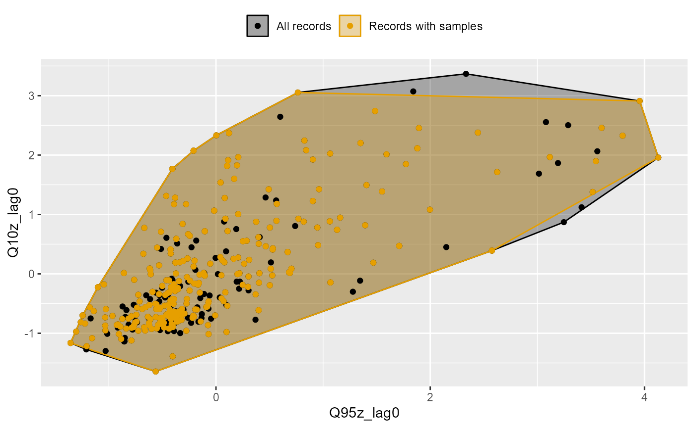
plot_rngflows(data = join_data, flow_stats = c("Q95z_lag0", "Q10z_lag0"), biol_metric = "LIFE_F_OE", wrap_by = "biol_site_id", label = "Year")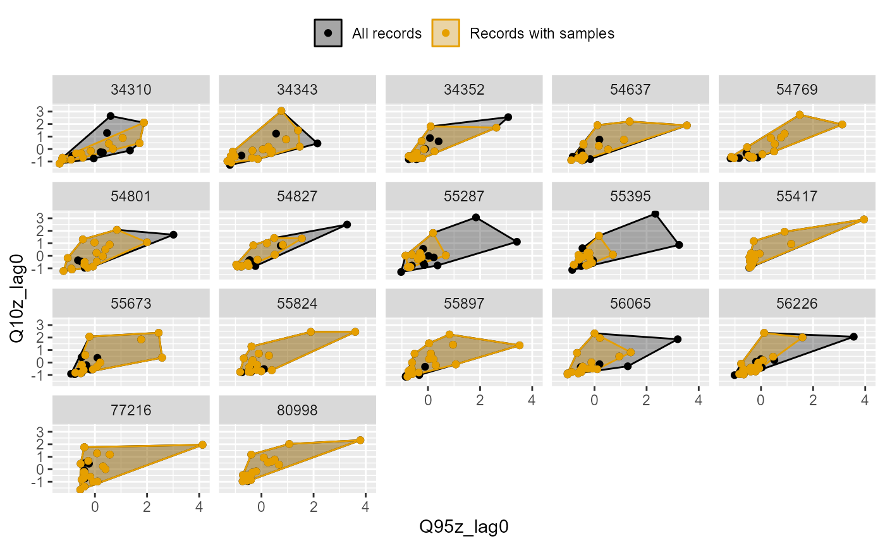
HEV plots
The plot_hev function generates, for one site of
interest, a time series plot of biology sample data and flow summary
statistics, often referred to by the EA as a hydro-ecological validation
(HEV) plot. HEV plots provide a visual assessment of trends in the
historical data, and an initial guide to possible relationships that
could be explored and quantified within a hydro-ecological model.
Whilst the dataset outputted by the join_he function can
be used to produce a HEV plot, a better solution is achieved by via a
combination of manual processing and the add biol
functionality of join_he.
# get output from calc_flowstats
flowstats_1 <- flow_stats[[1]]
# create two-column table mapping biology sites to flow sites
mapping <- data.frame(master_data[, c("biol_site_id", "flow_site_id")])
# filter biology and flow datasets to sites of interest
biol_data_hev <- dplyr::filter(biol_all, biol_site_id %in% unique(mapping$biol_site_id))
flow_data_hev <- dplyr::filter(flowstats_1, flow_site_id %in% unique(mapping$flow_site_id))
# create a complete daily time series for each biology site
hev_data <- expand.grid(
biol_site_id = unique(biol_data_hev$biol_site_id),
date = seq.Date(as.Date("2011-01-01"), as.Date("2019-12-31"), by="day"),
stringsAsFactors = FALSE)
# create season and water_year columns on which to join the six-monthly flow statistics
hev_data$Month <- lubridate::month(hev_data$date)
hev_data$Year <- lubridate::year(hev_data$date)
# join biology data
hev_data <- hev_data %>%
left_join(biol_data_hev, by = c("biol_site_id", "date", "Year"))
# join flow data
hev_data <- join_he(biol_data = hev_data, flow_stats = flow_data_hev, mapping = mapping, method = "B", join_type = "add_biol")Using this new hev_data dataset, the following example
uses multiplot = TRUE to produce HEV plots for four
macroinvertebrate metrics at one site.
plot_hev(data = subset(hev_data, biol_site_id == "34352"),
date_col = "date",
flow_stat = c("Q95z_lag0", "Q10z_lag0"),
biol_metric = c("LIFE_F_OE", "WHPT_ASPT_OE", "WHPT_NTAXA_OE", "PSI_OE"),
multiplot = TRUE)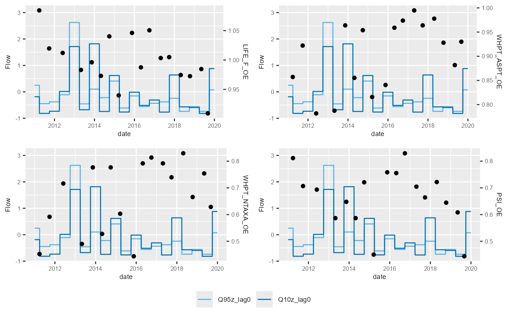
The save argument can be used to export the HEV plot as
a .png file. The name of the png file is fixed, however, so to generate
a separate png file for each site requires a loop.
bsi <- mapping$biol_site_id[1:5]
#for(i in mapping$biol_site_id){
for(i in bsi){
hev_plot <- plot_hev(data = subset(hev_data, biol_site_id == i),
date_col = "date",
flow_stat = c("Q95z_lag0", "Q10z_lag0"),
biol_metric = c("LIFE_F_OE"),
clr_by = "biol_site_id")
ggsave(hev_plot, device = "png", path = "Plots/", filename = paste0(i,"_hevplot.png"))
}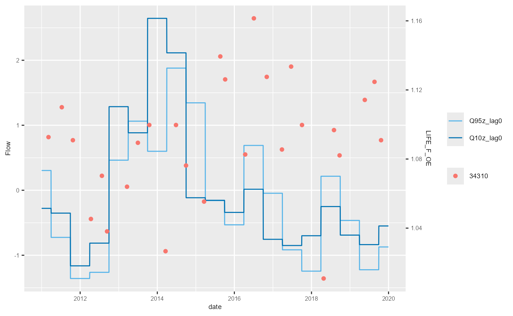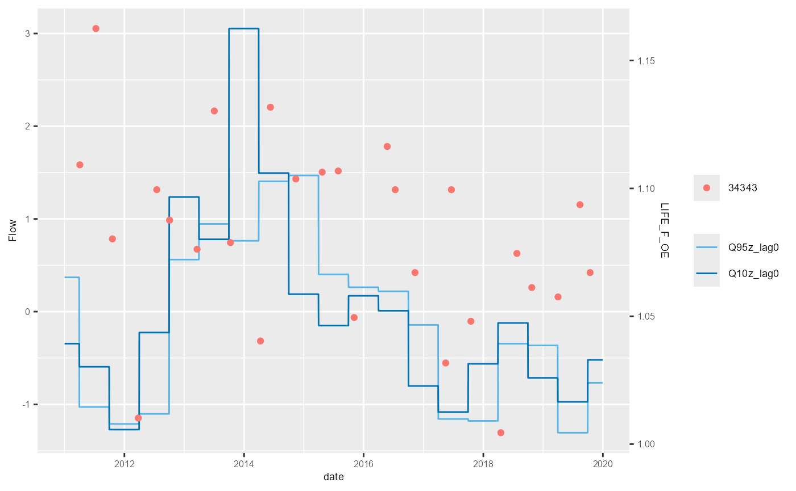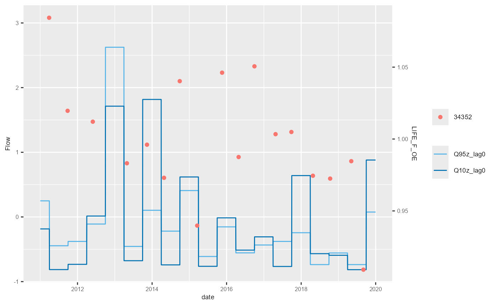 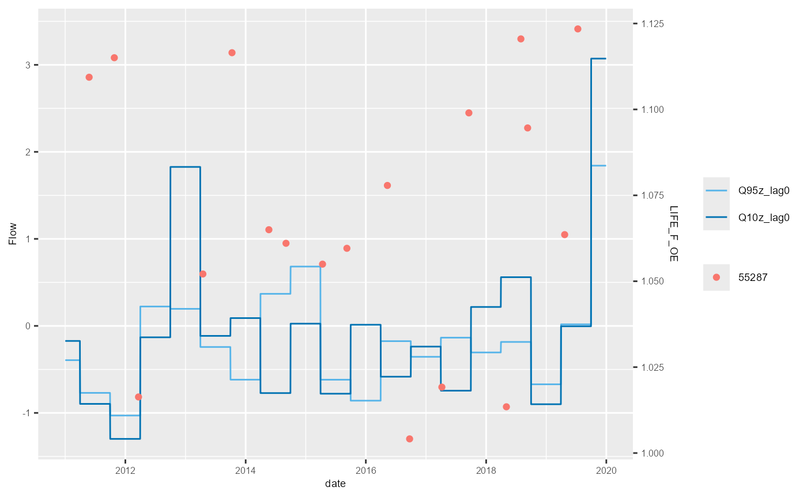
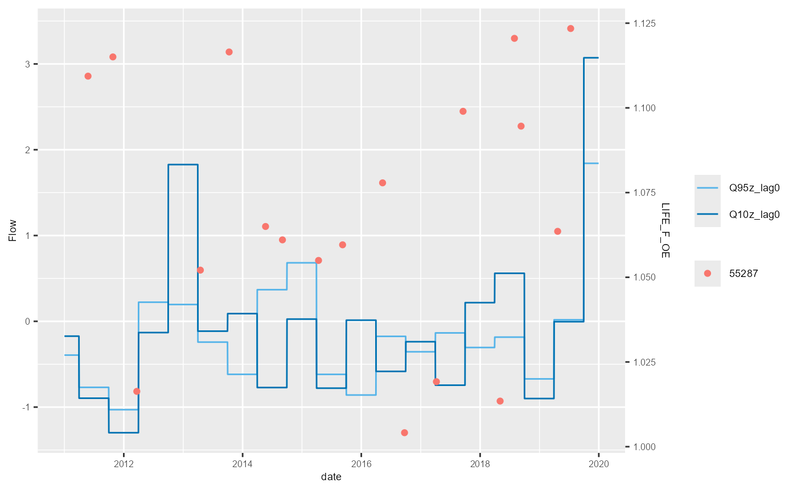
The example above shows the standard HEV plot, using non-overlapping 6-month (winter and summer) windows. By changing the inputs to the calc_flowstats function, HEV plots with different window widths can be also be plotted. The example below shows the same data but displayed with 12-month windows. The call to calc_flowstats used for this is:
# calculate flow statistics
flow_stats <- calc_flowstats(data = flow_data,
site_col = "flow_site_id",
date_col = "date",
flow_col = "flow",
win_width = "6 months",
win_step = "6 months")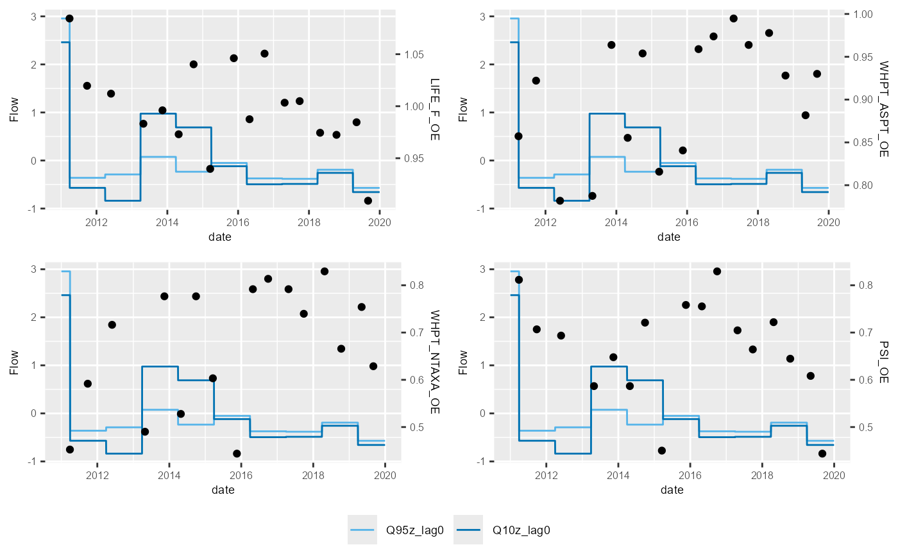
To interactively examine time series relationships for different
metrics and sites, use the shiny_hev function, which
launches a HEV plot within a shiny app.
Model calibration
Model selection
Once the biology and flow data has been assembled and explored, spatial and temporal variation in a biological metric of interest can be modelled as a function of one or more flow summary statistics to reveal potential hydro-ecological relationships. For datasets comprising multiple sites, linear mixed-effects models have the ability to describe a ‘global’ relationship that applies across all sites, whilst also quantifying the degree of variability in this relationship from site to site.
The following example illustrates a mixed-effects model fitted to
autumn macroinvertebrate data using the lmer function from
the lme4 package. The model includes three variables
representing high and low flows in different antecedent periods (Q95z,
Q10z), and Q95z also has a random (site-specific) slope.
# filter data by season
autumn_data <- all_data %>% filter(Season == "Autumn")
#filter data to eliminate NAs (necessary for cross-validation later on)
autumn_data <- autumn_data %>% filter(is.na(LIFE_F_OE) == FALSE)
autumn_data <- autumn_data %>% filter(is.na(biol_site_id) == FALSE)
autumn_data <- autumn_data %>% filter(is.na(Q95z_lag0) == FALSE)
autumn_data <- autumn_data %>% filter(is.na(Q10z_lag0) == FALSE)
autumn_data <- autumn_data %>% filter(is.na(Q95z_lag1) == FALSE)
model_full <- lme4::lmer(LIFE_F_OE ~ Q95z_lag0 + Q10z_lag0 + Q95z_lag1 + (Q95z_lag0 | biol_site_id), data = autumn_data, REML = FALSE)
summary(model_full)## Linear mixed model fit by maximum likelihood ['lmerMod']
## Formula: LIFE_F_OE ~ Q95z_lag0 + Q10z_lag0 + Q95z_lag1 + (Q95z_lag0 |
## biol_site_id)
## Data: autumn_data
##
## AIC BIC logLik -2*log(L) df.resid
## -538.9 -514.1 277.5 -554.9 156
##
## Scaled residuals:
## Min 1Q Median 3Q Max
## -3.15766 -0.56189 -0.01551 0.54874 2.78413
##
## Random effects:
## Groups Name Variance Std.Dev. Corr
## biol_site_id (Intercept) 4.560e-03 0.067529
## Q95z_lag0 2.245e-05 0.004738 -1.00
## Residual 1.380e-03 0.037154
## Number of obs: 164, groups: biol_site_id, 17
##
## Fixed effects:
## Estimate Std. Error t value
## (Intercept) 1.025e+00 1.666e-02 61.542
## Q95z_lag0 -1.306e-03 5.761e-03 -0.227
## Q10z_lag0 4.982e-03 4.595e-03 1.084
## Q95z_lag1 -1.276e-06 2.701e-03 0.000
##
## Correlation of Fixed Effects:
## (Intr) Q95z_0 Q10z_0
## Q95z_lag0 -0.146
## Q10z_lag0 -0.036 -0.701
## Q95z_lag1 -0.022 -0.095 0.221
## optimizer (nloptwrap) convergence code: 0 (OK)
## boundary (singular) fit: see help('isSingular')To aid model selection, the hetoolkit package includes
two functions for performing cross-validation.
model_cv performs repeated, stratified k-fold
cross-validation, which can be used to evaluate a model’s ability to
predict the response at sites in the calibration dataset. Alternatively,
model_logocv performs leave-one-group-out cross-validation,
which can be used to evaluate a model’s ability to predict the response
at sites not in the calibration dataset. Both functions can be applied
to linear mixed-effects model (class: lmerMod) or hierarchical
generalized additive model (class: gam) model with a single random
grouping factor. See ?model_cv and
?model_logocv for details.
model_cv and model_logocv measure the
performance of the model under different situations, and so will not
necessarily agree which is the best model. If the priority is to be able
to predict the response at sites in the calibration dataset, then use
model_cv; if the priority is to be able to predict the
response at sites not in the calibration dataset, then use
model_logocv.
In the following example, the process of simplifying the full model
is guided by model_cv, which measures predictive
performance using the Root Mean Square Error (RMSE); lower values
indicate better predictions. r is set at 20 to give stable
RMSE estimates and control is used to help prevent model
convergence issues. Backward elimination of random-effect terms is
followed by backward elimination of fixed-effect terms, until the RMSE
cannot be reduced any further. model_3 is the final,
preferred model.
# get RMSE estimate
cv_full[1]## $RMSE
## [1] 0.04104335
# drop random slope
model_1 <- model_full <- lme4::lmer(LIFE_F_OE ~ Q95z_lag0 + Q10z_lag0 + Q95z_lag1 + (1 | biol_site_id), data = autumn_data, REML = FALSE)
cv_1 <- model_cv(model = model_1, data = autumn_data, group = "biol_site_id", k = 5, r = 20, control = my_control)
# model_1 has a lower RMSE than model_full, so drop Q95z slope
cv_1[1]## $RMSE
## [1] 0.0401557
# drop Q95zLS1 term
model_2 <- model_full <- lme4::lmer(LIFE_F_OE ~ Q95z_lag0 + Q10z_lag0 + (1 | biol_site_id), data = autumn_data, REML = FALSE)
cv_2 <- model_cv(model = model_2, data = autumn_data, group = "biol_site_id", k = 5, r = 20, control = my_control)
# model_2 has a lower RMSE than model_full, so drop Q95zLS1
cv_2[1]## $RMSE
## [1] 0.03969886
# drop Q10z term
model_3 <- model_full <- lme4::lmer(LIFE_F_OE ~ Q95z_lag0 + (1 | biol_site_id), data = autumn_data, REML = FALSE)
cv_3 <- model_cv(model = model_3, data = autumn_data, group = "biol_site_id", k = 5, r = 20, control = my_control)
# model_3 has a lower RMSE than model_2, so drop Q10z
cv_3[1]## $RMSE
## [1] 0.03956555
# no further model simplification possible; model_3 is the final model.Model diagnostics
The diag_lmer function produces a variety of diagnostic
plots for a mixed-effects regression (lmer) model.
# generate diagnostic plots
diag_plots <- diag_lmer(model = model_3, data = autumn_data, facet_by = NULL)These include:
- Fitted vs observed values.
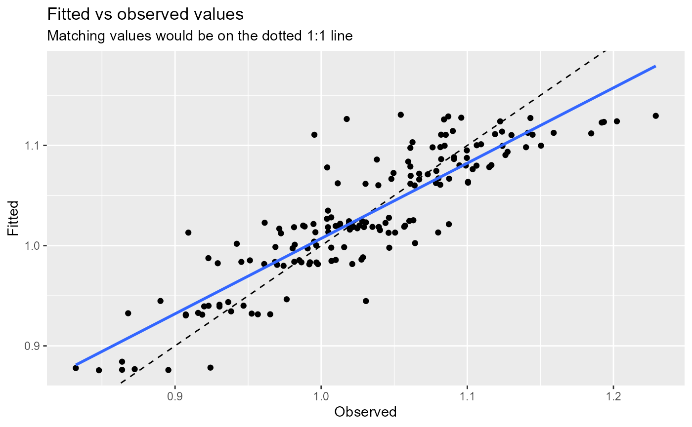
- Normal probability plot.
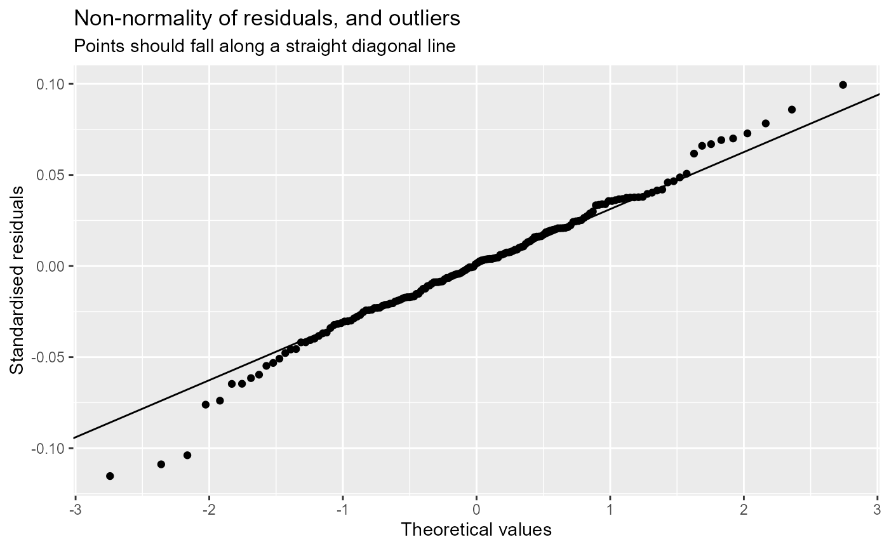
- Residuals vs fitted.
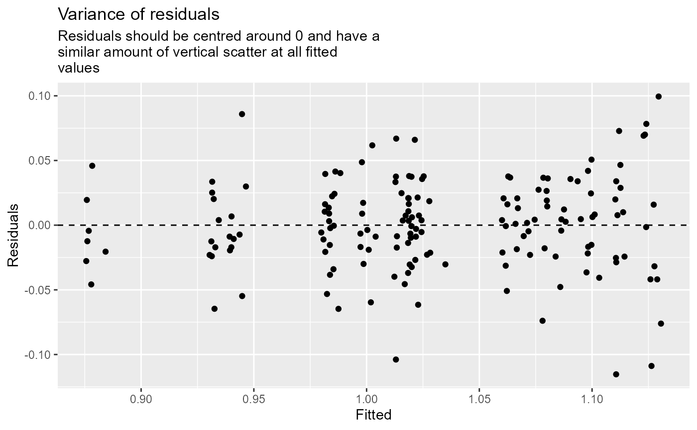
- Histogram of residuals.
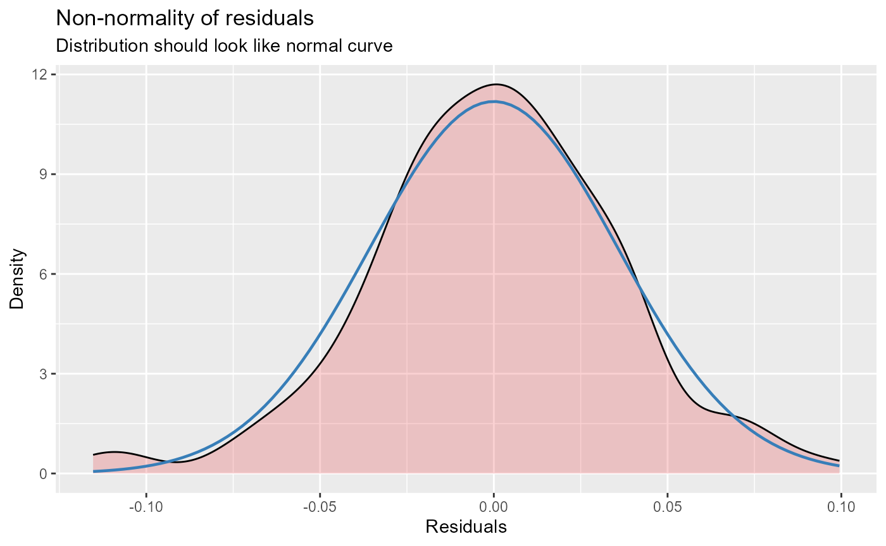
- Residuals vs model fixed predictors. This displays a linear model (red) for each fixed predictor vs the model’s residuals. The blue line is a loess-smoothed line. The main purpose of this plot is to check whether or not the relationship between residuals and a predictor is linear.
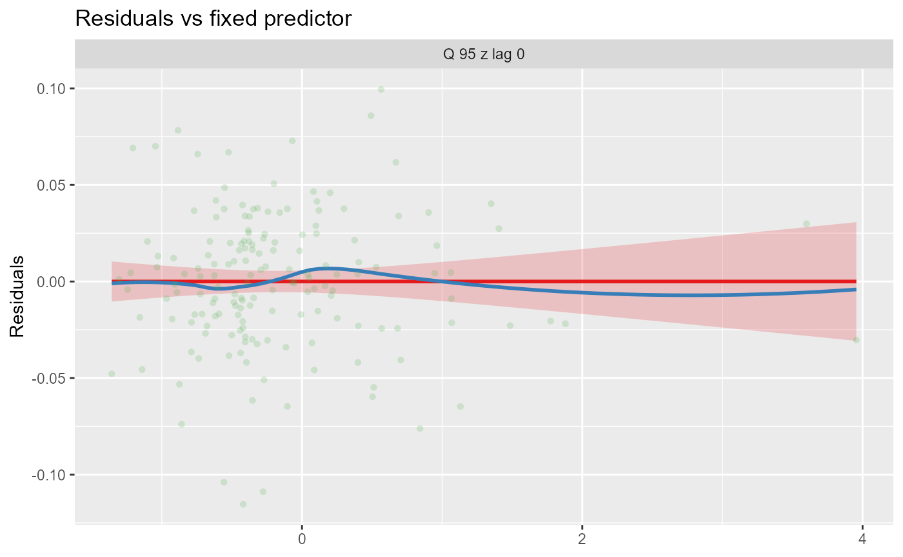
Alternatively, the plots can be faceted by site, to explore model fit and residuals site-by-site. In this example, the sites are arranged in descending order by the mean of the fitted values.
# generate diagnostic plots
diag_plots2 <- diag_lmer(model = model_3,
data = autumn_data,
facet_by = "biol_site_id",
order_by = "mean",
order = "descending",
ncol = 4,
scales = "fixed")
diag_plots2[[1]]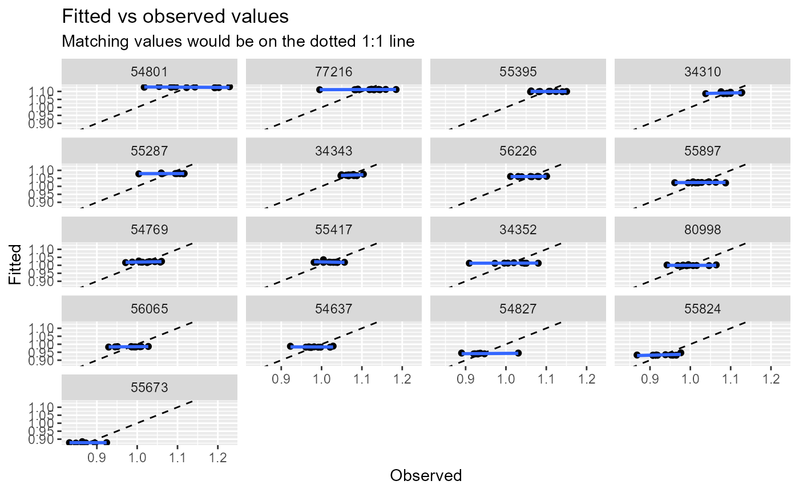
diag_plots2[[2]]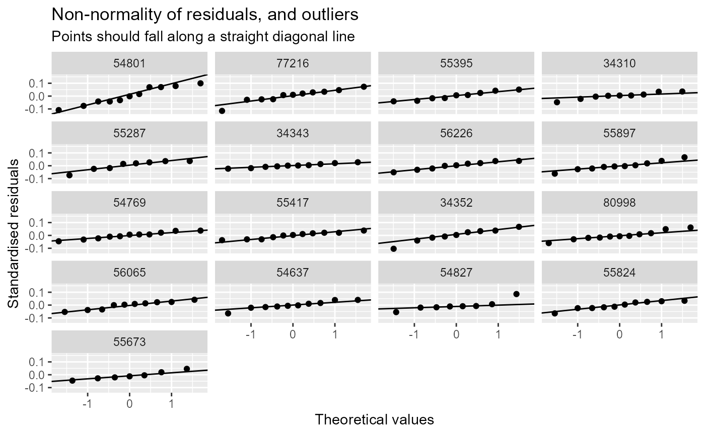
diag_plots2[[3]]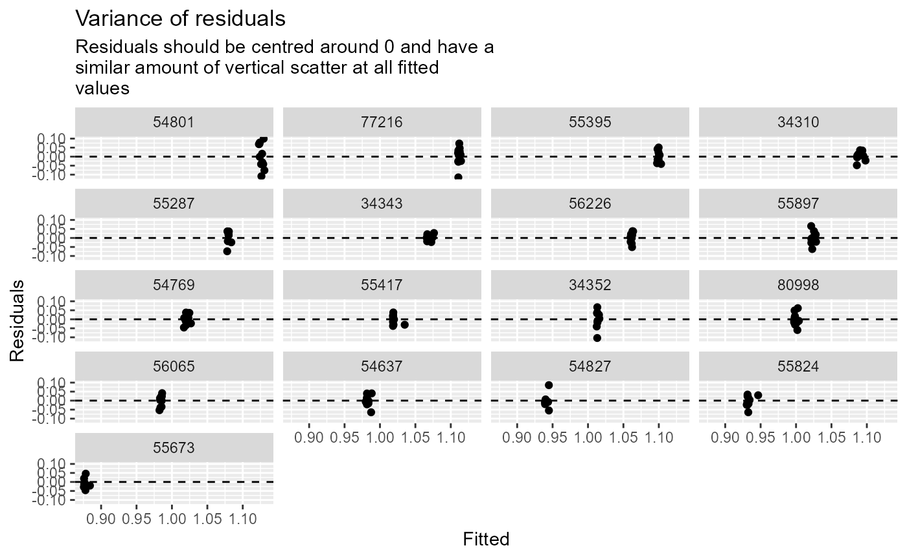
# boxplot instead of histogram of residuals:
diag_plots2[[4]]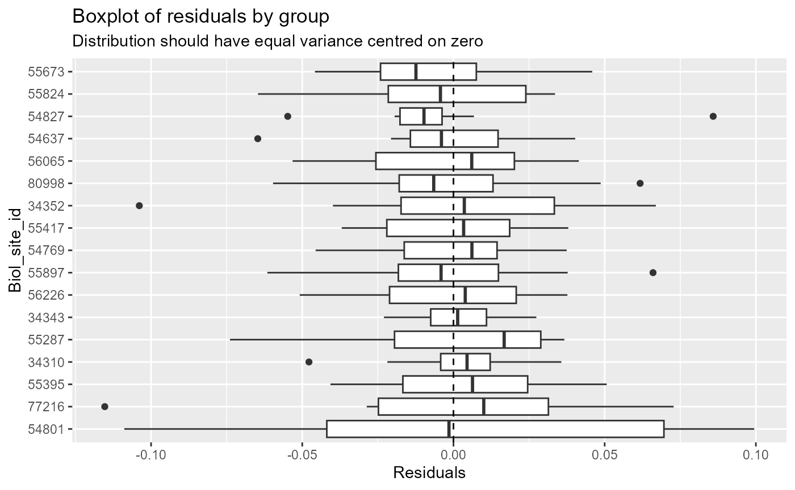
# same as un-faceted option:
# diag_plots2[[5]]Other useful diagnostic plots for lmer models
include:
- caterpillar plots, for visualising the random intercepts (and, where included, slopes) for each site:
sjPlot::plot_model(model = model_3,
type = "re",
facet.grid = FALSE,
free.scale = FALSE,
title = NULL,
vline.color = "darkgrey") +
ylim(-0.2,0.2)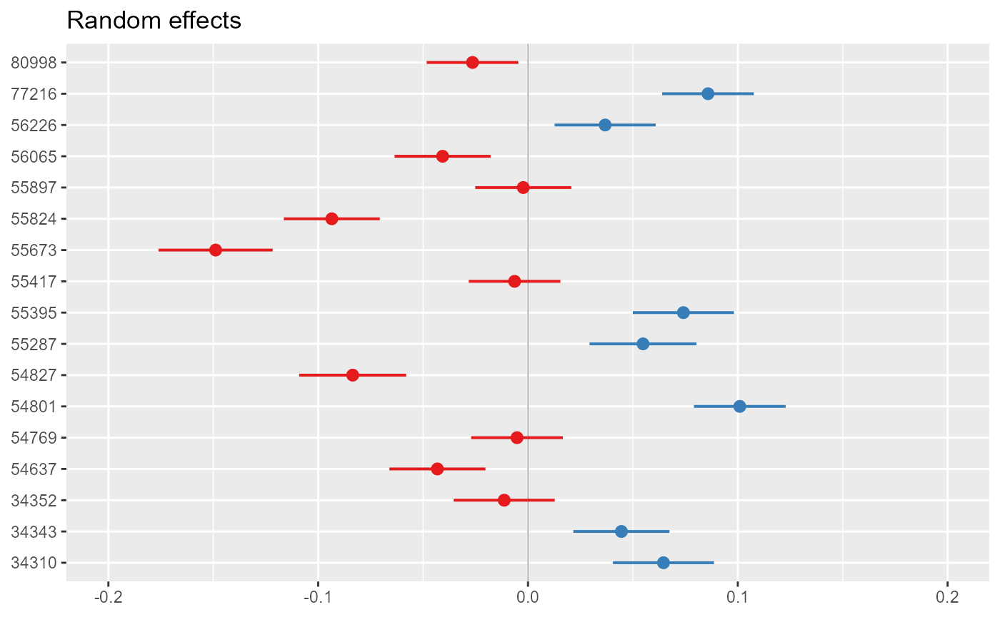
- partial regression plot for a fixed effect, showing the ‘global’ relationship:
visreg::visreg(model_3, "Q95z_lag0", ylab = "LIFE_F_OE")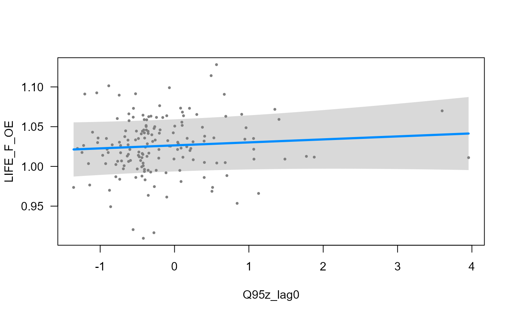
- partial regression plot for a random effect, showing the site-specific relationship (here only random intercepts were included so the slope is consistent among sites):
visreg::visreg(model_3, "Q95z_lag0", by = "biol_site_id", ylab = "LIFE_F_OE")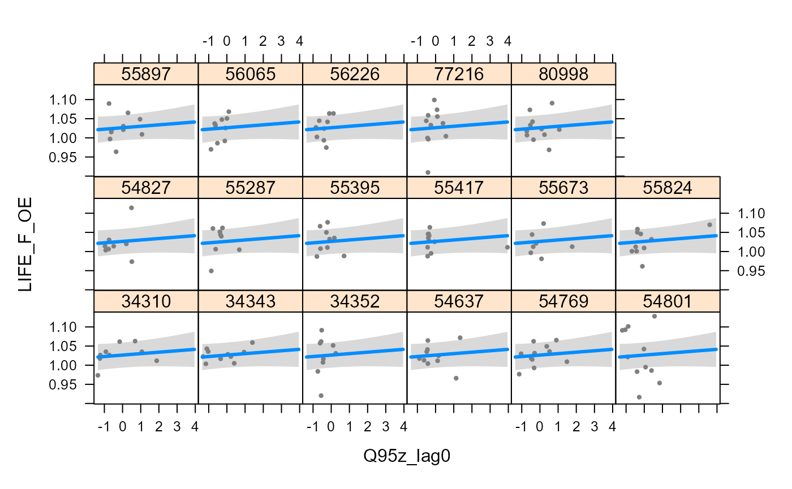
Predictions
The plot_predictions function produces a time series
plot of predictions from a hydro-ecological model, alongside observed
biology and flow data. The plot is faceted by site, as specified by the
site_col argument. The function generates a ggplot object,
which can optionally be saved as a .png file named
“Predictions_Plot.png”.
# Generate prediction intervals
pi <- merTools::predictInterval(merMod = model_3,
level = 0.95,
n.sims = 1000,
stat = "mean",
type="linear.prediction",
include.resid.var = TRUE)
# bind to model calibration dataset
autumn_data <- cbind(autumn_data, pi)
# produce predictions plot
plot_predictions(data = autumn_data,
biol_metric = "LIFE_F_OE",
time_col = "Year",
site_col = "biol_site_id",
flow_stat = c("Q95z_lag0", "Q10z_lag0"),
pred_col = c("fit", "lwr", "upr"),
ncol = 4)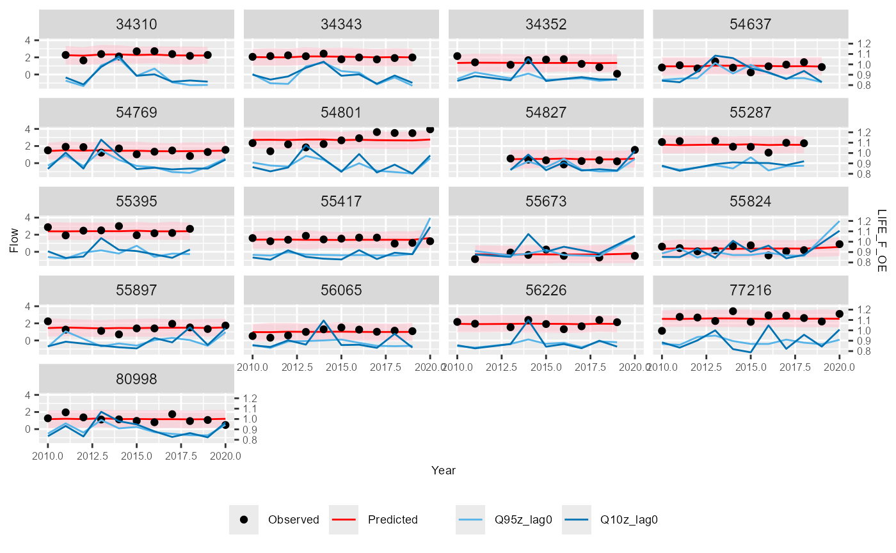